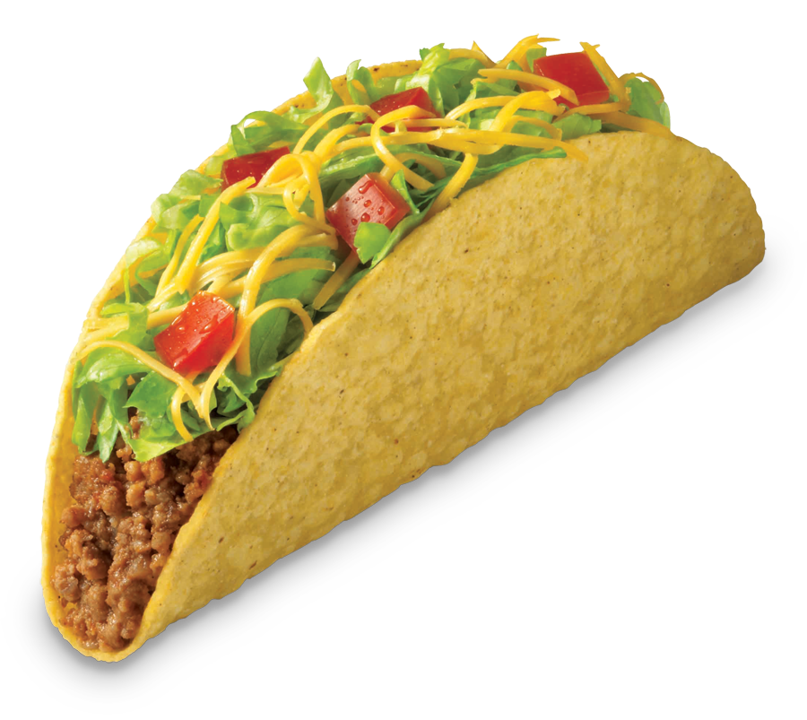

The burger is a Spherio-Dynamical food object, which is scientifically proven to last in the ZCREY Dimension. Yet so far it has denied logic and even gravity. Scientists to this day, are still working on what they call the "SCHRUMCH" Case. More info will be revealed soon.
Submarines are a historical food. The term "Submarine" originated in Greece in 1200 B.C when the commander of the Greek Empire found a semi-circle type prism locked away in the gates of the Roman Stronghold, commander Shezkith III needed a simpler way of saying it and thus, came up with Submarine.

In todays time, hotdogs are considered as the retail version of burgers. But, in the olden times, things were different. Hotdogs were considered more valuable than Gnurtonium which is worth $40,670,500,986. Legend has it that only 4 hotdogs were there in the world. 3 of them belonged to King Junthen and the last one went missing.

Brutally decapitated by the hunger filled Muttenicans, Chicken Nuggets have become quite the norm. It is often served on the side with the well known Burger or other foods. Chicken Nuggets are always undervalued. The inventor of Cooking Oil P.K Luther said this in a recent interview:There will be an uprisal of the Nuggets! Mark my Words!

Appreciated by the elderly, the Taco goes back to the 23rd Century. Back when a group of Cigerals used to stash their stolen loot, into a "Flauta" shaped bag that resembles our everyday Taco. Being able to hide for 13 Years the Cigerals made history! So Billy Backner decided to put it into our modern food perspective.
